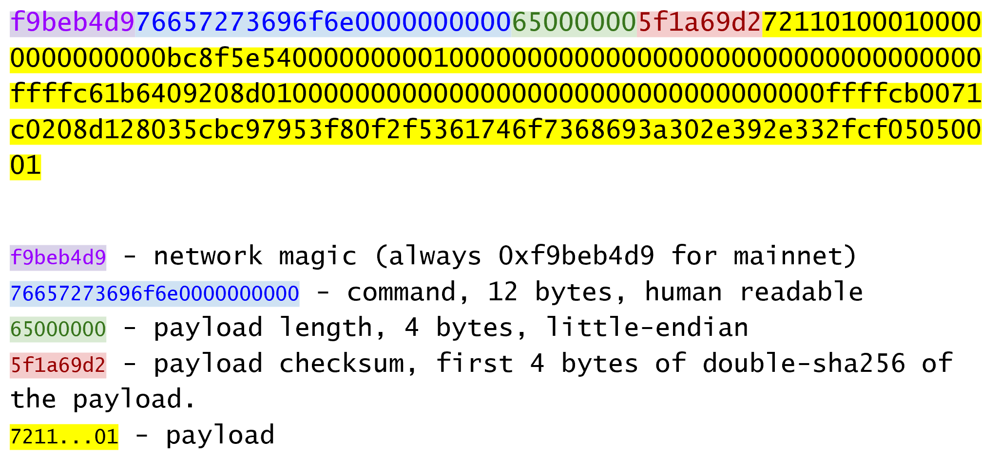
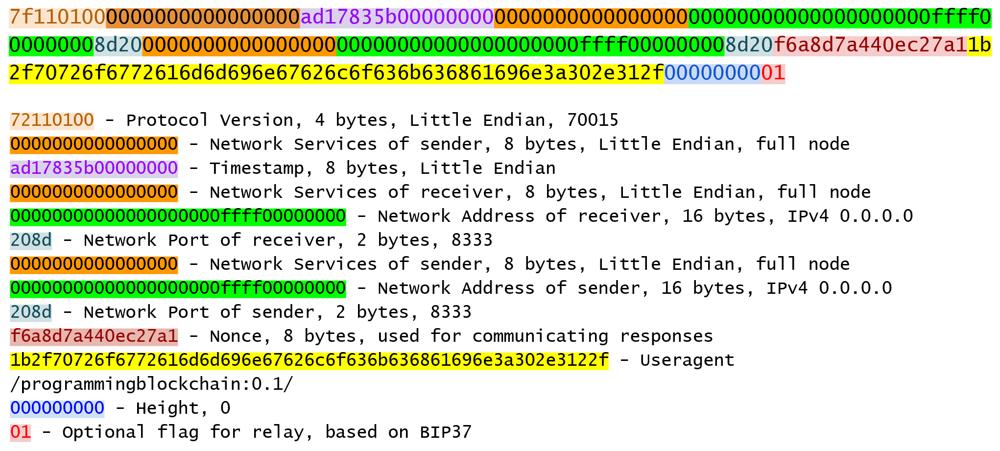

Networking
The peer-to-peer network that Bitcoin runs on is what gives it a lot of its robustness. 9400+ nodes are running on the network as of this writing and communicate constantly.
The Bitcoin network is a broadcast network or a gossip network. Every node is constantly announcing different transactions, blocks and peers that it knows about. The protocol is rich and has a lot of features that have been added to it over the years.
The nice thing about the networking protocol is that it is not consensus critical. The same data can be sent from one node to another in some other fashion and the blockchain itself would not be affected.
With that in mind, let’s start with the very first message that one node sends to another, the version message.
Network Messages
Network messages have a particular form that looks like this

The first four bytes are always the same and are referred to as the network magic. Magic bytes are common in network programming as the communication can be spotty and asynchronous. Magic bytes give the receiver a place to start should the communication get interrupted. Magic bytes are also useful to make sure the node is on the right network. You would not want a Bitcoin node to connect to a Litecoin node, for example. Thus, a Litecoin node has a differnt magic. Bitcoin testnet also has a different magic 0b110907 as opposed to the Bitcoin mainnet magic f9beb4d9 above.
The next 12 bytes define the command, or what the payload actually carries. There are many different payloads, many of which can be seen at https://wiki.bitcoin.it. Note that the command is meant to be human-readable and in fact this message is "version" in ascii with 0-byte padding.
The next 4 bytes determine the length of the payload. As we saw in the transaction and block parsing sections, this is necessary as the field is of variable length. As 232 is about 4 billion, we can have payloads that can be as big as 4 GB. Note the number is interpreted in little-endian, so in our case here, that is 101 bytes.
The next 4 bytes are the checksum. The checksum algorithm is something of an odd choice as it’s the first 4 bytes of the double-sha256 of the payload. I say odd, as normally, networking protocol checksums generally are designed to have error-correcting capability and double-sha256 has none. That said, the hash function is common in the rest of the protocol and is thus used here.
The code to handle network messages requires us to create a new class:
NETWORK_MAGIC = b'\xf9\xbe\xb4\xd9'
TESTNET_NETWORK_MAGIC = b'\x0b\x11\x09\x07'
class NetworkEnvelope:
def __init__(self, command, payload, testnet=False):
self.command = command
self.payload = payload
if testnet:
self.magic = TESTNET_NETWORK_MAGIC
else:
self.magic = NETWORK_MAGIC
def __repr__(self):
return '{}: {}'.format(
self.command.decode('ascii'),
self.payload.hex(),
)Exercise 1
Determine what this network message is:
f9beb4d976657261636b000000000000000000005df6e0e2
Exercise 2
Write the parse and serialize methods for NetworkEnvelope.
Parsing the payload
Each command has a separate payload specification. Here is the one for version:

The fields for version are meant to give enough information for two nodes to be able to be able to communicate.
Version specifies the network protocol version being communicated. Services give information about what services are available to connecting nodes. Timestamp here is 8 bytes (as opposed to 4 bytes in the block header) and is the same unix timestamp in little endian.
IP addresses can be IPv6 or IPv4. If IPv4, the first 12 bytes are 00000000000000000000ffff and the last 4 bytes are the IP. The port is 2 bytes and in little_endian.
Nonce is a number used only once for reply messages. User Agent identifies the software being run. The latest block helps the other node know which block you are synced up to.
Relay is used for Bloom Filters, which we’ll get to in Chapter 12.
Setting some reasonable defaults, our VersionMessage class looks like this:
class VersionMessage:
command = b'version'
def __init__(
self,
version=70015,
services=0,
timestamp=None,
receiver_services=0,
receiver_ip=b'\x00\x00\x00\x00',
receiver_port=8333,
sender_services=0,
sender_ip=b'\x00\x00\x00\x00',
sender_port=8333,
nonce=None,
user_agent=b'/programming-bitcoin:0.1/',
latest_block=0,
relay=True,
):
self.version = version
self.services = services
if timestamp is None:
self.timestamp = int(time.time())
else:
self.timestamp = timestamp
self.receiver_services = receiver_services
self.receiver_ip = receiver_ip
self.receiver_port = receiver_port
self.sender_services = sender_services
self.sender_ip = sender_ip
self.sender_port = sender_port
if nonce is None:
self.nonce = int_to_little_endian(randint(0, 2**64), 8)
else:
self.nonce = nonce
self.user_agent = user_agent
self.latest_block = latest_block
self.relay = relayAt this point, we need a way to serialize this message.
The idea is that nodes know how to actually send and receive such payloads wrapped inside a network envelope. A fully functional bitcoin node needs to know what to do with every possible network message.
Exercise 3
Write the serialize method for VersionMessage.
Network handshake
The network handshake for two nodes is how node communication is established. It goes something like this:
-
A wants to connect to B and sends the version message.
-
B receives the version message and responds with the verack message and sends its own version message.
-
A receives the version and verack messages and continues communication
Once the handshake is finished, A and B can communicate however they want. Note that there is no authentication here and it’s up to the nodes to verify all data that come in themselves. A node sending a bad tx or block, for example, can expect to get banned by other nodes.
Connecting to the network
Network communication is tricky due to its asynchronous nature. To experiment, we can establish a connection to a random node on the network synchronously.
import socket
from network import NetworkEnvelope, VersionMessage
host = 'tbtc.programmingblockchain.com'
port = 18333
socket = socket.socket(socket.AF_INET, socket.SOCK_STREAM)
socket.connect((host, port))
stream = socket.makefile('rb', None) # (1)
version_message = VersionMessage() # (2)
envelope = NetworkEnvelope(b'version', version_message.serialize(), testnet=True)
socket.sendall(envelope.serialize()) # (3)
while True:
new_message = NetworkEnvelope.parse(stream) # (4)
print(new_message)-
We create a stream to be able to read from the socket in the usual way. A stream made this way can be passed to all the parse methods.
-
The first step of the handshake is to send a version message.
-
We now send the message in the right envelope.
-
This line will read any messages coming in through our connected socket.
Connecting in this way, we can’t send until we’ve received and can’t respond intelligently to more than 1 message at a time. A more robust implementation would use an asynchronous library (like asyncio in Python 3) to allow be able to send and receive without hanging.
Let’s now make this more robust by creating a class that will handle a lot of the sending and receiving for us.
class SimpleNode:
def __init__(self, host, port=None, testnet=False, logging=False):
if port is None:
if testnet:
port = 18333
else:
port = 8333
self.testnet= testnet
self.logging = logging
# connect to socket
self.socket = socket.socket(socket.AF_INET, socket.SOCK_STREAM)
self.socket.connect((host, port))
# create a stream that we can use with the rest of the library
self.stream = self.socket.makefile('rb', None)
def send(self, command, payload): # (1)
'''Send a message to the connected node'''
# create a network envelope
envelope = NetworkEnvelope(command, payload, testnet=self.testnet)
if self.logging:
print('sending: {}'.format(envelope))
# send the serialized envelope over the socket using sendall
self.socket.sendall(envelope.serialize())
def read(self): # (2)
'''Read a message from the socket'''
envelope = NetworkEnvelope.parse(self.stream, testnet=self.testnet)
if self.logging:
print('receiving: {}'.format(envelope))
return envelope
def wait_for_commands(self, commands): # (3)
'''Wait for one of the commands in the list'''
# initialize the command we have, which should be None
command = None
# loop until the command is in the commands we want
while command not in commands:
# get the next network message
envelope = self.read()
# set the command to be evaluated
command = envelope.command
# we know how to respond to version and ping, handle that here
if command == b'version':
# send verack
self.send(b'verack', b'')
elif command == b'ping':
# send pong
self.send(b'pong', envelope.payload)
# return the last envelope we got
return envelope-
The send method sends a message over the socket. As long as we know what the command and payload are, the rest of the NetworkEnvelope construction is taken care of here.
-
The read method reads a new message from the socket. This method could potentially detect the message and route to the right parser and send back not the envelope but the correctly parsed expected object.
-
The wait_for_commands method lets us wait for any one of several commands. This allows us to treat the socket connection a bit more synchronously and makes for a bit easier programming. A commercial strength node would definitely not use something like this.
Now that we have a node, we can now handshake with another node.
>>> from network import SimpleNode, VersionMessage
>>> node = SimpleNode('tbtc.programmingblockchain.com', testnet=True) # (1)
>>> version_message = VersionMessage() # (2)
>>> node.send(version_message.command, version_message.serialize()) # (3)
>>> verack_received = False
>>> version_received = False
>>> while not verack_received and not version_received: # (4)
... envelope = node.wait_for_commands([b'verack', b'version']) # (5)
... if envelope.commend == b'verack':
... verack_received = True
... else:
... version_received = True
... node.send(b'verack', b''])
...-
The server in this example is something the author has set up. You can find other IP addresses for both mainnet and testnet at https://bitnodes.earn.com/api/
-
It turns out most nodes don’t really care about all the fields like ip address and port number all that much. We can connect with the defaults and everything will be just fine.
-
We start the handshake by sending the version message
-
We only finish when we’ve received both verack and version.
-
We expect to receive a verack for our version and the other node’s version. We don’t know which order, though
Exercise 4
Write the handshake method for SimpleNode
Getting headers
Now that we can connect to a node, what can we do? When any node first connects to the network, the data that’s most crucial to get and verify are the block headers. For full nodes, downloading headers allows us to asynchronously ask for various blocks. For light nodes, downloading headers allows us to verify the proof-of-work in each block and give us an idea of how long the blockchain is. As we’ll see in Chapter 11, light clients will be able to get proofs-of-inclusion through the network using the block headers alone.
Block headers, fortunately, are always available. It does not matter if the node we’re connected to is a full node or not. Every node can give us the headers it has. The command to get the block headers is called getheaders and it looks something like this:
We have to specify the protocol version, the number of hashes in this list and then the starting to ending blocks that we want. If we specify the ending block to be 000…000, we’re indicating that we want as many as the other node will give us. The maximum number of headers that we’ll get back is 2000, or almost a single difficulty adjustment period (2016 blocks).
Here’s what the class looks like:
class GetHeadersMessage:
command = b'getheaders'
def __init__(self, version=70015, num_hashes=1, start_block=None, end_block=None):
self.version = version
self.num_hashes = num_hashes # (1)
if start_block is None: # (2)
raise RuntimeError('a starting block is required')
self.start_block = start_block
if end_block is None:
self.end_block = b'\x00' * 32 # (3)
else:
self.end_block = end_block-
For the purposes of this chapter, we’re going to assume that the number of hashes we’ll get is 1. A more robust implementation would handle more than a single hash, but we can download the block headers using a single hash.
-
A starting block is needed, otherwise we can’t create a proper message.
-
The ending block we assume to be null, or as many as the server will send to us if not defined.
Exercise 5
Write the serialize method for GetHeadersMessage.
Headers response
At this point, we can now create a node, handshake, and then ask for some headers.
>>> from network import SimpleNode, GetHeadersMessage
>>> from block import GENESIS_BLOCK_HASH
>>> node = SimpleNode('btc.programmingblockchain.com', testnet=True)
>>> node.handshake()
>>> getheaders = GetHeadersMessage(start_block=GENESIS_BLOCK_HASH)
>>> node.send(getheaders.command, getheaders.serialize())Now we need a way to receive the actual headers from our connected node. The other node will send back the headers command. The nice thing about the headers command is that it’s a bunch of block headers which we already learned how to parse from Chapter 9. The actual HeadersMessage class can take advantage. The message looks like this:
We start with the number of headers as a varint. We can have up to 2000 come back, so this is important. Each block header, we know, is 80 bytes. We have the number of transactions, or 0 in this case. The number of transactions is always 0. This may be a bit confusing at first since we only asked for the headers and not the transactions. The reason nodes bother sending the number of transactions at all is because this is meant to be compatible with the format for a full block, which is the block header, number of transactions and then the transactions themselves. By specifying that the number of transactions is 0, we can use the same parsing engine as when parsing a full block.
We can proceed to the actual parsing.
class HeadersMessage:
def __init__(self, blocks):
self.blocks = blocks
@classmethod
def parse(cls, stream):
# number of headers is in a varint
num_headers = read_varint(stream)
# initialize the blocks array
blocks = []
# loop through number of headers times
for _ in range(num_headers):
# add a block to the blocks array by parsing the stream
blocks.append(Block.parse(stream)) # (1)
# read the next varint (num_txs)
num_txs = read_varint(stream) # (2)
# num_txs should be 0 or raise a RuntimeError
if num_txs != 0: # (3)
raise RuntimeError('number of txs not 0')
# return a class instance
return cls(blocks)-
Each block gets parsed using the
Blockclass’sparsemethod using the same stream that we have. -
The number of transactions is always 0 and is a remnant of block parsing.
-
If we didn’t get 0, something is wrong.
We can now do something useful with the network connection that we’ve set up. We can download the headers, check their proof of work and validate the block header difficulty adjustments.
>>> from network import SimpleNode, GetHeadersMessage, HeadersMessage
>>> from block import GENESIS_BLOCK_HASH
>>> from helper import calculate_new_bits
>>> node = SimpleNode('btc.programmingblockchain.com', testnet=False)
>>> node.handshake()
>>> last_block_hash = GENESIS_BLOCK_HASH
>>> first_epoch_block = None
>>> expected_bits = None
>>> count = 1
>>> while True:
... getheaders = GetHeadersMessage(start_block=last_block_hash)
... node.send(getheaders.command, getheaders.serialize())
... headers_envelope = node.wait_for_commands([b'headers'])
... headers_message = HeadersMessage.parse(headers_envelope.stream())
... for block in headers_message.blocks:
... if not block.check_pow(): # (1)
... raise RuntimeError('bad proof of work at block {}'.format(count))
... if last_block_hash != GENESIS_BLOCK_HASH and block.prev_block != last_block_hash: # (2)
... raise RuntimeError('discontinuous block at {}'.format(count))
... if expected_bits and block.bits != expected_bits: # (3)
... raise RuntimeError('bad bits at block {} {} vs {}'.format(count, block.bits.hex(), expected_bits.hex()))
... if first_epoch_block and count % 2016 == 2015: # (4)
... expected_bits = calculate_new_bits(
... expected_bits, block.timestamp - first_epoch_block.timestamp)
... print(expected_bits.hex())
... elif first_epoch_block is None: # (5)
... expected_bits = block.bits
... if count % 2016 == 0 or not first_epoch_block: # (6)
... first_epoch_block = block
... count += 1
... last_block_hash = block.hash()
... if len(headers_message.blocks) < 2000:
... break-
We are checking the proof-of-work being correct
-
We are checking that the current block is following the previous one we checked
-
We are checking that the bits/target/difficulty is what should be in our current epoch
-
At the end of the epoch, we calculate the next bits/target/difficulty
-
We need to store the first block of the epoch to calculate bits at the end of the epoch
Note that this won’t work on testnet as the difficulty adjustment algorithm is slightly different. To make sure blocks can proceed for testing, if a block hasn’t been found in 20 minutes, the difficulty drops to 1, making it very easy to find a block. This is on purpose as to allow testers to be able to progress the network without expensive mining equipment. A $30 USB ASIC can typically find a few blocks per minute at the minimum difficulty.
Conclusion
We’ve managed to connect to a node on the network, handshake and do something useful, which is download and verify that the block headers meet the consensus rules. In the next chapter, we focus on getting information about transactions that we’re interested in from another node in a private, yet provable way.